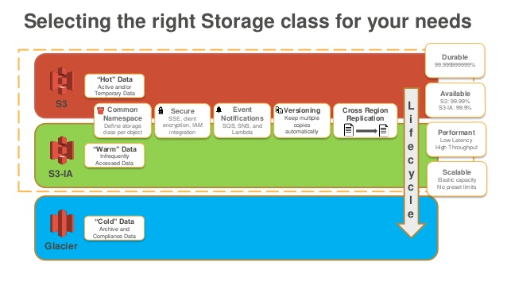
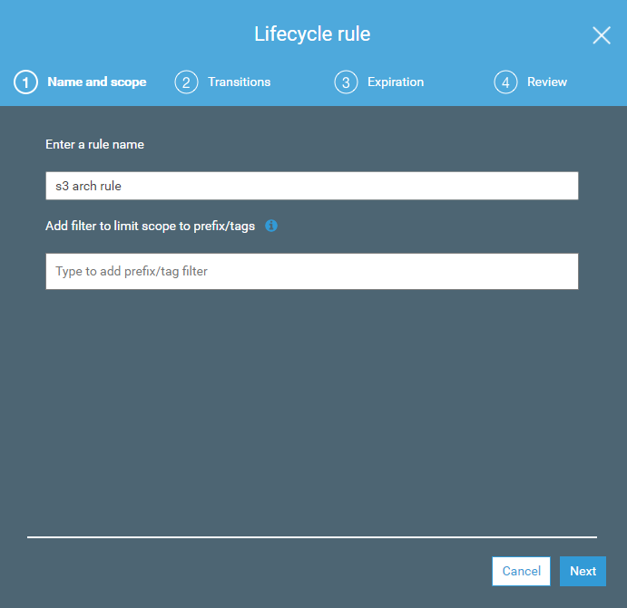
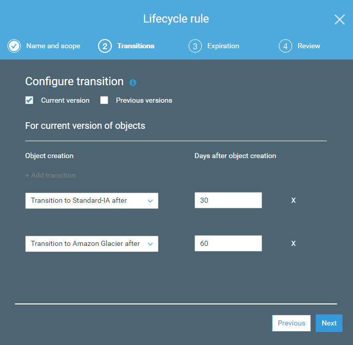
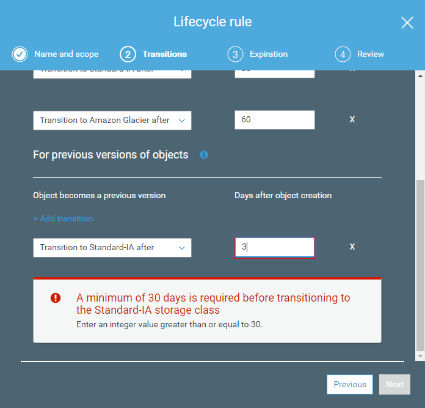
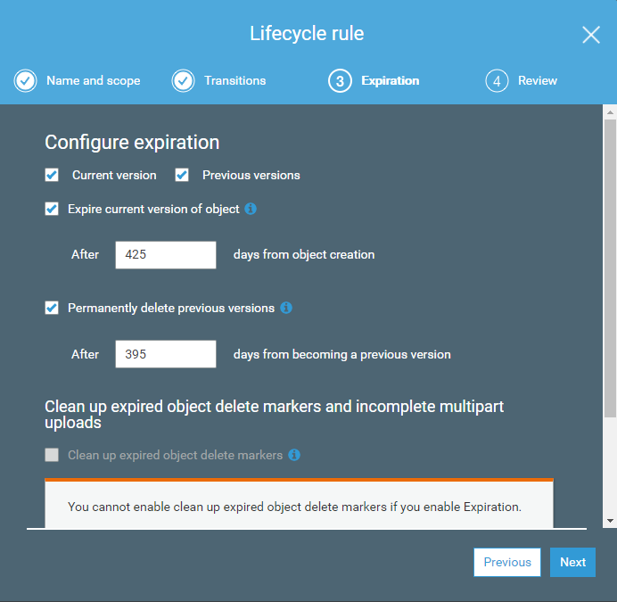
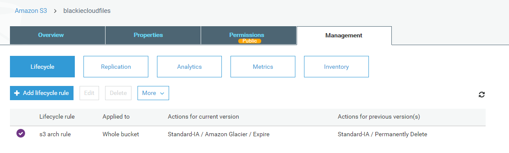
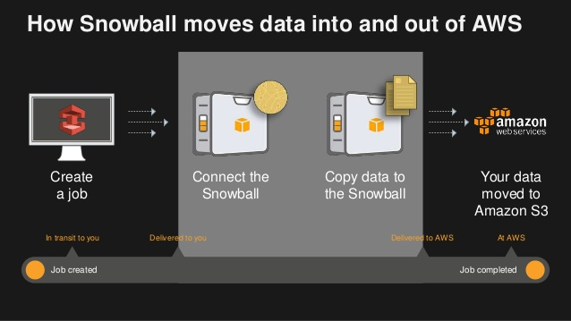
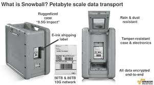
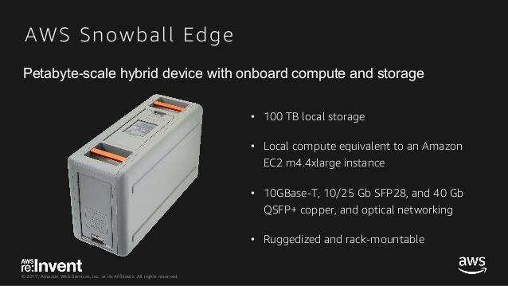

30天鐵人賽介紹 AWS 雲端世界 - 9: S3 的檔案生命週期管理之 S3 IA, Glacier 與 Snowball 服務
今天我們首先會介紹一下 S3 IA, Glacier 如何搭配 S3 Standard 進行檔案生命週期的管理
而當我們提到資料如何被儲存與存放的生命週期，當然也要提及如果現有資料怎麼被移送至雲端上面，所以也會同時介紹到 Storage GateWay 與 Snowball 這兩項服務。
What is S3 IA 與 Glacier
S3 Infrequent Access Storage(IA) 的設計上是拿來放資料備份，但希望拉資料時很快就可以拉出來。這邊於 S3 Standard 的服務水準相同，設計時則是建構在99.999999999%的服務水準(11個9)上面。
而 Glacier 則是一個長期存儲但鮮少需要讀取的服務，它可以提供非常低的儲存費用。在現實世界彷彿磁帶的解決方案來協助我們存放龐大的資料。這邊的服務水準跟設計就遠小於 S3 Standard ，設計為 99.9%，實際提供的SLA為99%。
而兩著的服務都是要額外計算資料讀取時的費用，對於資料讀取的反應速度也有不同的等級。
一般來說一個 S3 Standard 資料過期(建立到存放超過30天)，如果確定不能直接刪除但可能鮮少需要讀取，但每次讀取都要有跟原先依樣的速度，那就是將過期資料轉換至 S3 IA存放。而相對的，如果讀取時不講求反應時間，可以接受3-5小時才能將資料放回來做存取，那就建議使用 Glacier。
而如果連放Glacier都逾期的資料那就可以直接設定刪除了。
所以將資料分為三個等級(Hot, Warm 與 Cold)則是以下圖方式置放：

Hands on Lab
這邊我們就來手把手設定資料如何管控 S3 的檔案生命週期，使用情境如下：
- S3 Standard 上置放超過7天的檔案自動轉換至 S3 IA
- S3 IA 上置放超過30天的檔案自動轉換至Glacier
- Glacier 上置放超過30天的檔案永久刪除(30天 IA, 30天 Glacier)

除了當前的版本之外，我們也可以額外設定先前的版本超過多久就送至 IA 或是 Glacier 存放。

這邊要稍微注意一下轉換至 S3 IA 的檔案至少需要128 KB並超過30天

而這邊我們可以設定當前版本多久算是過期，以及過期版本或是逾期版本多久後永久被刪除。

當全部設定完成後即可以看到我們該規則設定的全貌：

What is Snowball
這邊也要介紹如何透過實體的傳遞服務，將我們現有資料匯入/匯出 AWS 雲端服務。

Snowball 是 PB 級資料傳輸解決方案，使用安全設備將大量資料傳入和傳出 AWS 雲端，用於匯入匯出至 AWS S3 服務中。
Snowball 總共有三個分類:
Snowball
一個實體加密的箱子，可以讓你安心的傳送資料至 AWS 雲端，省去傳輸時間的浪費。

詳細的介紹可以參考這邊：
Snowball Edge
同 Snowball 但提供了更高的儲存容量並可提供運算能力，讓你在搬移的過程還是可以持續運作。

詳細的介紹可以參考這邊：
Snowballmobile
一開始聽到這個名字絕對會被後面的mobile給誤會，畢竟我們現在聽到mobile大多聯想應該都是手持、隨身、輕量之類的，但這邊的mobile指的是貨櫃車。他提供了 Exabyte 等級的空間可以讓你傳遞 100 PB的檔案至 AWS 上面。
計價內容包含：
每個任務基本服務費
- Snowball 50 TB：200 USD
- Snowball 80 TB：250 USD
額外使用天數費用
- 現場使用的前 10 天免費*，每個額外天數為 15 USD
資料傳輸
- 將資料傳入 Amazon S3 的價格為 0.00 USD/GB (免費)
- 將資料傳出 Amazon S3 的價格依區域而定
運費
運費是根據運送位置的標準承運商費率，以及您所選的運送選項 (例如：2 天、隔天) 計算
Amazon S3 費用
這邊指的就是轉換資料到 Amazon S3 服務上的費用，跟我們用什麼等級存放以及如何取用跟資料大小有關
計價方式請參考Snowball - Pricing